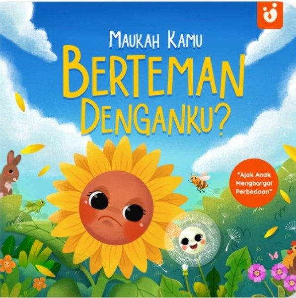
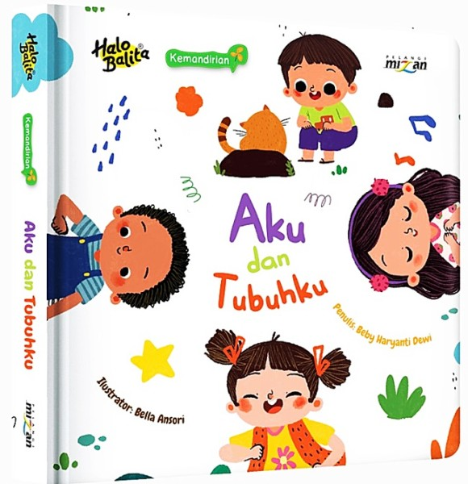
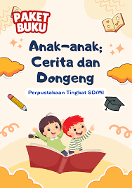
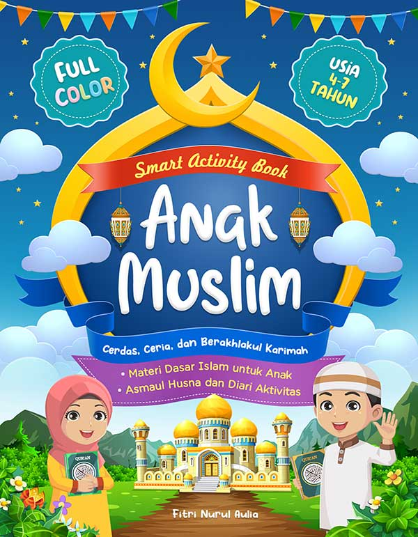
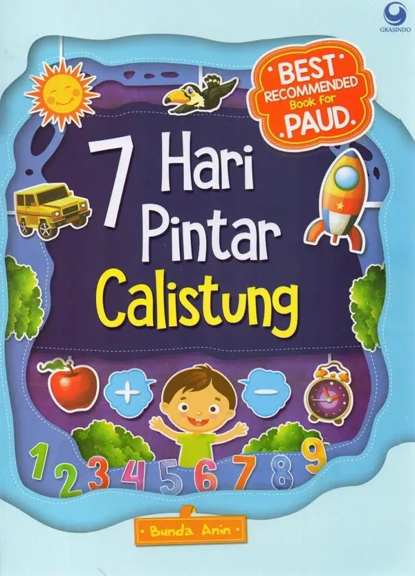
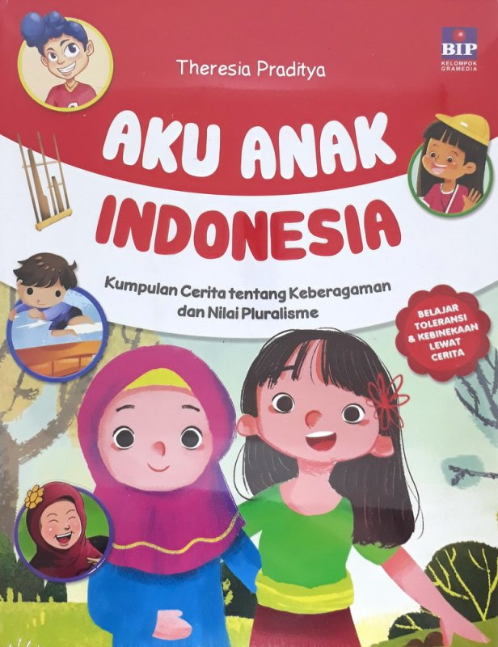

Buku Cerita Anak Umur 1-3 tahun
Rp.75.000
Buku ini dirancang khusus untuk anak usia 1–3 tahun dengan ilustrasi besar, warna cerah, dan bentuk yang menarik perhatian. Setiap halaman menampilkan gambar sederhana yang mudah dikenali, seperti hewan, benda sehari-hari, anggota tubuh, atau aktivitas rutin anak Teks dalam buku sangat singkat, menggunakan kata-kata dasar dan berulang untuk membantu anak mengenal kosakata awal serta melatih kemampuan berbicara. Beberapa buku dilengkapi elemen interaktif seperti tekstur, lipatan (flap), atau lubang intip yang mendorong anak untuk menyentuh, membuka, dan bereksplorasi.

Buku Cerita Anak umur 3-5 tahun
Rp55.000
Latih rasa ingin tahu si kecil dengan petualangan yang seru! Di usia 4-5 tahun, anak-anak sedang semangat-semangatnya belajar hal baru. Buku ini dirancang khusus dengan kalimat sederhana dan ilustrasi penuh warna yang akan membuat mereka betah berlama-lama membaca.

Buku Cerita Anak umur 6-8 tahun
Rp85.000
Buku ini ditujukan untuk anak usia 6–8 tahun yang sedang mengembangkan kemampuan membaca dan memahami cerita. Cerita disajikan dengan alur sederhana namun menarik, mengangkat tema yang dekat dengan kehidupan anak seperti persahabatan, keluarga, sekolah, petualangan, dan nilai-nilai kebaikan. Teks ditulis dengan kalimat yang lebih panjang dibanding buku balita, namun tetap menggunakan bahasa yang mudah dipahami dan sesuai dengan tingkat perkembangan anak. Ilustrasi berwarna tetap mendominasi halaman untuk membantu anak memahami isi cerita, menambah imajinasi, dan menjaga minat membaca.

Buku Cerita Anak umur 6-8 tahun
Rp75.000
Buku ini menghadirkan cerita yang seru dan menyenangkan untuk anak usia 6–8 tahun yang mulai gemar membaca sendiri. Dengan perpaduan teks dan ilustrasi yang seimbang, anak diajak mengikuti kisah tokoh-tokoh yang lucu, berani, dan penuh rasa ingin tahu. Bahasa yang digunakan sederhana dan mengalir, membantu anak meningkatkan kelancaran membaca sekaligus memperkaya kosakata. Setiap cerita dirancang untuk merangsang imajinasi, mengasah logika, serta mengajak anak memahami sebab-akibat melalui peristiwa yang terjadi dalam cerita. Selain menghibur, buku ini juga menyisipkan nilai-nilai positif seperti kerja sama, percaya diri, rasa tanggung jawab, dan sikap saling menghargai. Cocok sebagai bacaan mandiri maupun dibacakan bersama, buku ini mendukung tumbuhnya minat baca dan kecintaan anak terhadap buku sejak dini..
Buku Cerita Anak umur 6-8 tahun
9.000
Buku ini mengajak anak usia 6–8 tahun menjelajahi cerita yang hangat, menyenangkan, dan mudah diikuti. Setiap halaman dirancang untuk mendukung kemampuan membaca anak yang semakin berkembang, dengan susunan teks yang rapi dan ilustrasi yang membantu memperjelas cerita. Cerita dalam buku ini mendorong anak untuk berpikir, bertanya, dan membayangkan berbagai kemungkinan melalui konflik ringan yang sesuai dengan dunia anak. Tokoh-tokohnya digambarkan dekat dengan keseharian pembaca, sehingga anak dapat belajar memahami perasaan, mengambil keputusan sederhana, dan menyelesaikan masalah dengan cara yang positif. Buku ini tidak hanya menjadi teman membaca, tetapi juga sarana belajar nilai kehidupan seperti empati, keberanian mencoba hal baru, dan menghargai perbedaan. Cocok untuk anak yang sedang membangun kebiasaan membaca dan memperkuat kepercayaan diri dalam membaca mandiri.

Buku Cerita Anak umur 7-8 tahun
10.000
Buku ini dirancang untuk anak usia 7–8 tahun yang sudah mulai membaca dengan lebih lancar dan menikmati cerita yang memiliki alur lebih jelas. Kisah disajikan dengan cerita yang menarik dan runtut, menghadirkan tokoh-tokoh yang dekat dengan dunia anak serta situasi yang mudah dipahami. Bahasa yang digunakan sederhana namun lebih variatif, membantu anak memperkaya kosakata dan meningkatkan pemahaman bacaan. Ilustrasi tetap hadir sebagai pendukung cerita, memperkuat imajinasi, dan membantu anak memahami suasana serta karakter dalam cerita. Melalui cerita yang menghibur, buku ini mengajak anak belajar tentang tanggung jawab, kerja sama, kejujuran, dan keberanian dalam mengambil keputusan. Cocok untuk bacaan mandiri di rumah maupun sebagai bahan literasi pendukung di sekolah, buku ini membantu menumbuhkan minat baca dan kecintaan anak terhadap dunia membaca.

Buku Cerita Anak umur 8-11 tahun
25.000
Buku ini ditujukan untuk anak usia 8–11 tahun yang telah mampu membaca dengan lancar dan mulai menikmati cerita yang lebih kompleks. Kisah disajikan dengan alur yang menarik, konflik ringan hingga menengah, serta tokoh-tokoh yang memiliki karakter kuat dan berkembang sepanjang cerita. Bahasa yang digunakan komunikatif dan kaya kosakata, membantu anak meningkatkan pemahaman bacaan, daya nalar, serta kemampuan berpikir kritis. Ilustrasi digunakan sebagai pelengkap untuk memperkuat suasana cerita, tanpa mengurangi fokus pada teks utama.
Buku Cerita Anak umur 5-10 tahun
21.000
Buku ini dirancang untuk anak usia 5–10 tahun dengan beragam tingkat kemampuan membaca, mulai dari pembaca awal hingga pembaca yang lebih lancar. Cerita disajikan secara bertahap, dengan alur yang mudah diikuti dan tema yang dekat dengan kehidupan anak, seperti keluarga, sekolah, persahabatan, dan petualangan sederhana. Bahasa yang digunakan ringan dan komunikatif, disesuaikan dengan usia pembaca, sehingga anak yang lebih kecil dapat menikmati cerita melalui ilustrasi, sementara anak yang lebih besar dapat memahami teks secara mandiri. Ilustrasi berwarna membantu memperjelas cerita, membangun imajinasi, dan menjaga minat baca anak.

Buku Cerita Anak umur 4-8 tahun
13.500
Buku ini dirancang untuk anak usia 4–8 tahun yang sedang berada pada tahap awal hingga menengah dalam perkembangan membaca. Cerita disajikan dengan alur sederhana dan menyenangkan, mengangkat tema yang dekat dengan dunia anak seperti keluarga, persahabatan, sekolah, dan petualangan ringan. Bahasa yang digunakan mudah dipahami, dengan kalimat singkat hingga sedang, sehingga cocok untuk anak yang baru belajar membaca maupun yang mulai membaca mandiri. Ilustrasi berwarna cerah berperan penting dalam membantu anak memahami cerita, menstimulasi imajinasi, dan menjaga ketertarikan anak pada buku.